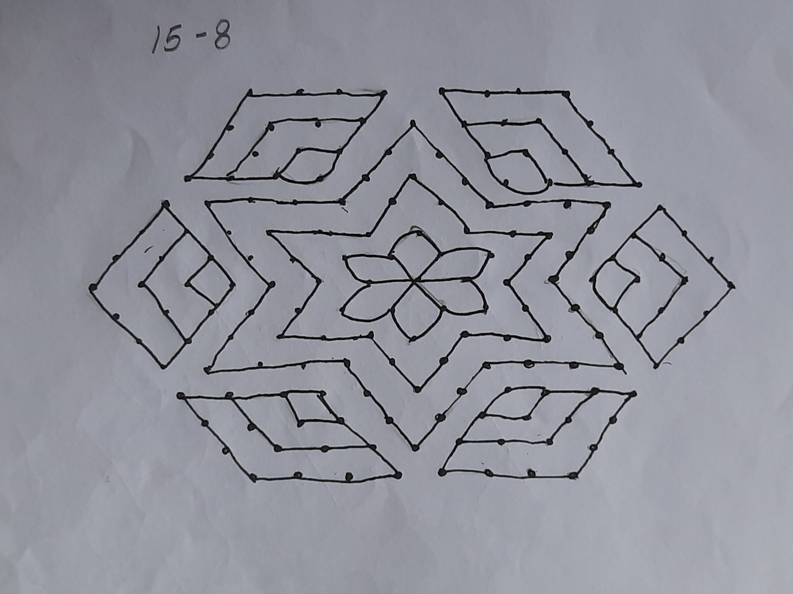
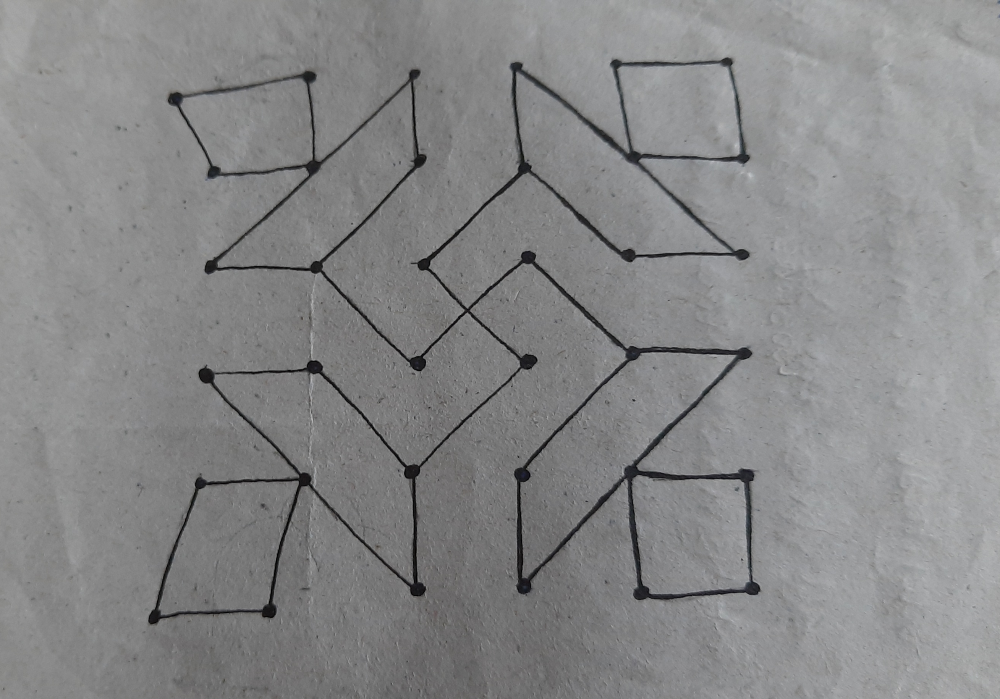
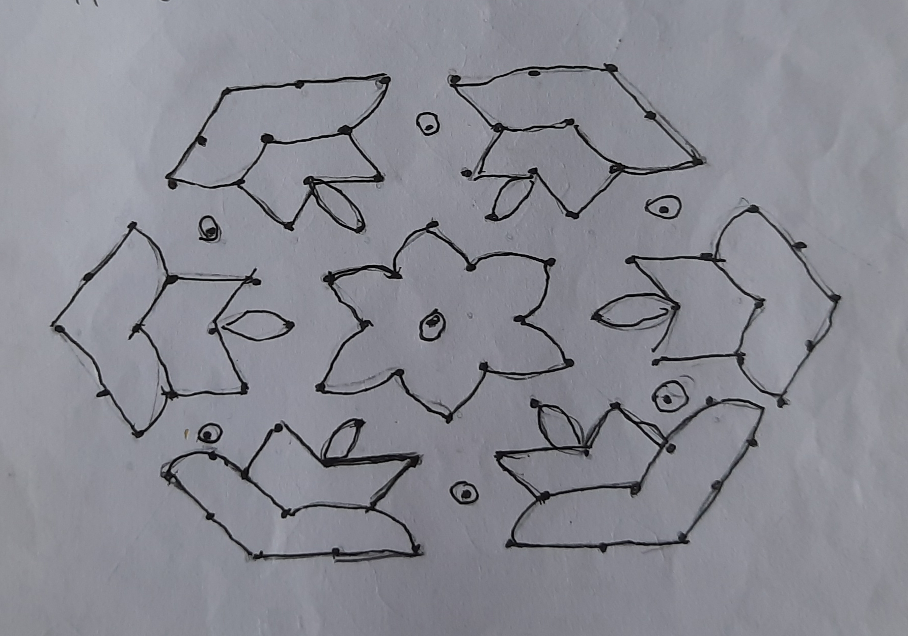
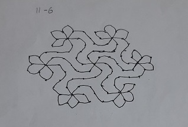
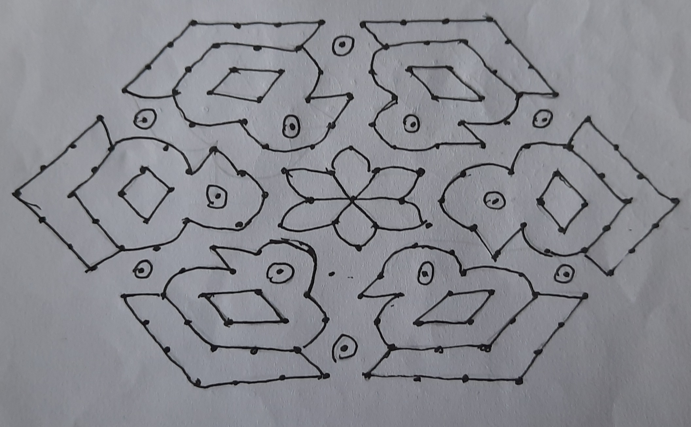

This Rangoli is a symmetrical one. The Rangoli’s center is a depiction of a flower. Which, like the rest of the rangoli, is symmetrical. The Rangoli is made of a number of diamonds. The dots upon which this rangoli is made is a 15-8 dot arrangement.

This rangoli is made up of trapeziums and squares together to create the four sides. The center connects them all; an 'x' or '+' sign. This also symbolizes the swastika. this rangoli is built on a set of 36 dots, all arranged into a six by six square.

This rangoli is symmetrical and is shaped like a hexagon, which is also symmetrical. The shapes used to make the diyas are two parallelograms which are connected. The flame is made out of a leaf-shaped silhouette. The flower in the center has to be symmetrical as it is the heart a symmetrical rangoli.

Around the outer-rim of this rangoli, there are half built flowers, which are asymmetrical. yet, the whole rangoli is symmetrical. The pattern of dots used are in this order: 11 in the middle, which then descends to 6 on either side.

The rangoli is symmetrical and represents a hexagon. The outer layer depicts birds. These birds are made of triangles, circles, rectangles and trapeziums. The center is a symmetrical flower, with slightly diamond-like petals. The dot pattern upon which this depiction is made is a pattern in which the line in the center is 15 dots. Then the number of dots in a line descends to an 8.